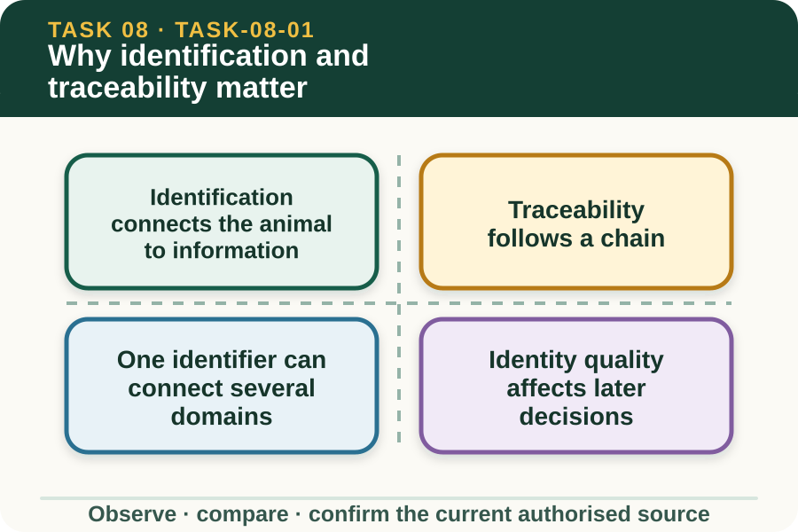

Classroom presentation · 8 slides
Why identification and traceability matter
Task 8 · 1 of 8
Why identification and traceability matter
Trace how an animal identifier connects to health, movement, treatment and enterprise records.

Speaker notes
Teaching move (web-deck purpose): Use the module visual and the fictional worked example to move students from observation to a source-led decision. Ask students to name the evidence, the authority gap and the next safe communication step. Misconception and help: Trace the identifier into the records, dates, locations and events it connects. Ask what information another authorised person could retrieve from the identifier. Applied action: Build a fictional traceability chain. Match invented identifier cards with fictional observation, movement and enterprise records. Leave one deliberate conflict unresolved and write the authorised reconciliation question. Do not use real records or discuss marking technique. Boundary: This supplementary learning draws on mapped AHCLSK225 concepts. Current signed TAS and RTO documents control cohort delivery, assessment and competency decisions; current workplace procedures, supervision and authorised sources control real work. [Sources] - Source basis: AHCLSK225 Release 1 identification, tally and recording requirements, supported by authorised livestock focus-area concepts about the purpose and importance of accurate identification. Current enterprise and regulatory systems control legal identity and records. - Visual visual-task-08-01: Generated locally from accepted Stage 05 module headings; no external image copied. - Course visual manifest: work/pi/visuals/visual-manifest.json
Task 8 · 2 of 8
Map the learning
- Identification connects the animal to information
- Traceability follows a chain
- One identifier can connect several domains
Retrieve: Why is an identifier alone not a complete traceability system?
Speaker notes
Teaching move (learning map): Use the module visual and the fictional worked example to move students from observation to a source-led decision. Ask students to name the evidence, the authority gap and the next safe communication step. Misconception and help: Trace the identifier into the records, dates, locations and events it connects. Ask what information another authorised person could retrieve from the identifier. Applied action: Build a fictional traceability chain. Match invented identifier cards with fictional observation, movement and enterprise records. Leave one deliberate conflict unresolved and write the authorised reconciliation question. Do not use real records or discuss marking technique. Boundary: This supplementary learning draws on mapped AHCLSK225 concepts. Current signed TAS and RTO documents control cohort delivery, assessment and competency decisions; current workplace procedures, supervision and authorised sources control real work. [Sources] - Source basis: AHCLSK225 Release 1 identification, tally and recording requirements, supported by authorised livestock focus-area concepts about the purpose and importance of accurate identification. Current enterprise and regulatory systems control legal identity and records. - Visual visual-task-08-01: Generated locally from accepted Stage 05 module headings; no external image copied. - Course visual manifest: work/pi/visuals/visual-manifest.json
Task 8 · 3 of 8
Notice the evidence
Identification connects the animal to information
Livestock identification gives an enterprise a consistent way to connect an animal or group with authorised records. The identifier is useful because the same identity can be traced across time, tasks and responsible people.
A visible mark or device is not the whole system. Accuracy also depends on the register, event records, source documents and people using the identifier consistently.
Traceability follows a chain
A traceability chain links source identity, animal or group, recorded event, date, location, responsible person and outcome. Each link must be clear enough for another authorised person to follow.
If one link is missing, the record should show the gap. A learner should not invent a location, owner, event or treatment detail to create a complete-looking story.
Speaker notes
Teaching move (theory idea 1): Use the module visual and the fictional worked example to move students from observation to a source-led decision. Ask students to name the evidence, the authority gap and the next safe communication step. Misconception and help: Trace the identifier into the records, dates, locations and events it connects. Ask what information another authorised person could retrieve from the identifier. Applied action: Build a fictional traceability chain. Match invented identifier cards with fictional observation, movement and enterprise records. Leave one deliberate conflict unresolved and write the authorised reconciliation question. Do not use real records or discuss marking technique. Boundary: This supplementary learning draws on mapped AHCLSK225 concepts. Current signed TAS and RTO documents control cohort delivery, assessment and competency decisions; current workplace procedures, supervision and authorised sources control real work. [Sources] - Source basis: AHCLSK225 Release 1 identification, tally and recording requirements, supported by authorised livestock focus-area concepts about the purpose and importance of accurate identification. Current enterprise and regulatory systems control legal identity and records. - Visual visual-task-08-01: Generated locally from accepted Stage 05 module headings; no external image copied. - Course visual manifest: work/pi/visuals/visual-manifest.json
Task 8 · 4 of 8
Use the source boundary
One identifier can connect several domains
The same authorised identity may connect livestock observations, movement, treatment, breeding, sale or enterprise records, depending on the current system. Accurate identity helps avoid applying one animal's history to another.
This lesson explains relationships, not the legal rules or device requirements for a particular species. Current regulatory and enterprise sources determine which identification system applies.
Identity quality affects later decisions
A missing, duplicated, unreadable or inconsistent identifier can weaken every linked record. The first response is to preserve what is visible and compare it with authorised sources rather than choose the closest match.
The authorised reviewer may need to check additional records before resolving identity. Until then, uncertainty must remain visible so later decisions do not rely on an assumed match.
Speaker notes
Teaching move (theory idea 2): Use the module visual and the fictional worked example to move students from observation to a source-led decision. Ask students to name the evidence, the authority gap and the next safe communication step. Misconception and help: Trace the identifier into the records, dates, locations and events it connects. Ask what information another authorised person could retrieve from the identifier. Applied action: Build a fictional traceability chain. Match invented identifier cards with fictional observation, movement and enterprise records. Leave one deliberate conflict unresolved and write the authorised reconciliation question. Do not use real records or discuss marking technique. Boundary: This supplementary learning draws on mapped AHCLSK225 concepts. Current signed TAS and RTO documents control cohort delivery, assessment and competency decisions; current workplace procedures, supervision and authorised sources control real work. [Sources] - Source basis: AHCLSK225 Release 1 identification, tally and recording requirements, supported by authorised livestock focus-area concepts about the purpose and importance of accurate identification. Current enterprise and regulatory systems control legal identity and records. - Visual visual-task-08-01: Generated locally from accepted Stage 05 module headings; no external image copied. - Course visual manifest: work/pi/visuals/visual-manifest.json
Task 8 · 5 of 8
Connect evidence to action
Records need privacy and access control
Livestock records can contain enterprise, owner, purchaser, veterinary and movement information. Use only authorised systems and share details with people who have a legitimate role under current procedures.
Website practice uses invented identifiers and businesses. Do not paste a real register, device list, assessment record or confidential enterprise history into a device-local field.
Traceability supports review, not certainty
A well-linked record helps an authorised person reconstruct events and check decisions. It does not guarantee that every original entry was accurate or that the animal's current status is unchanged.
Students rehearse following the record chain and naming gaps. Practical identification, legal compliance and formal assessment remain controlled by current sources, supervision and the RTO process.
Speaker notes
Teaching move (theory idea 3): Use the module visual and the fictional worked example to move students from observation to a source-led decision. Ask students to name the evidence, the authority gap and the next safe communication step. Misconception and help: Trace the identifier into the records, dates, locations and events it connects. Ask what information another authorised person could retrieve from the identifier. Applied action: Build a fictional traceability chain. Match invented identifier cards with fictional observation, movement and enterprise records. Leave one deliberate conflict unresolved and write the authorised reconciliation question. Do not use real records or discuss marking technique. Boundary: This supplementary learning draws on mapped AHCLSK225 concepts. Current signed TAS and RTO documents control cohort delivery, assessment and competency decisions; current workplace procedures, supervision and authorised sources control real work. [Sources] - Source basis: AHCLSK225 Release 1 identification, tally and recording requirements, supported by authorised livestock focus-area concepts about the purpose and importance of accurate identification. Current enterprise and regulatory systems control legal identity and records. - Visual visual-task-08-01: Generated locally from accepted Stage 05 module headings; no external image copied. - Course visual manifest: work/pi/visuals/visual-manifest.json
Task 8 · 6 of 8
Retrieve and check
Why is an identifier alone not a complete traceability system?
- It must connect consistently with authorised registers and event records.
- Every identifier automatically contains all legal and health information.
- Identifiers are only decorative marks used during classroom work.
Teacher reveal
Correct. Traceability depends on the relationship between identity and recorded events.
Ask what information another authorised person could retrieve from the identifier.
Speaker notes
Teaching move (retrieval): Use the module visual and the fictional worked example to move students from observation to a source-led decision. Ask students to name the evidence, the authority gap and the next safe communication step. Misconception and help: Trace the identifier into the records, dates, locations and events it connects. Ask what information another authorised person could retrieve from the identifier. Applied action: Build a fictional traceability chain. Match invented identifier cards with fictional observation, movement and enterprise records. Leave one deliberate conflict unresolved and write the authorised reconciliation question. Do not use real records or discuss marking technique. Boundary: This supplementary learning draws on mapped AHCLSK225 concepts. Current signed TAS and RTO documents control cohort delivery, assessment and competency decisions; current workplace procedures, supervision and authorised sources control real work. [Sources] - Source basis: AHCLSK225 Release 1 identification, tally and recording requirements, supported by authorised livestock focus-area concepts about the purpose and importance of accurate identification. Current enterprise and regulatory systems control legal identity and records. - Visual visual-task-08-01: Generated locally from accepted Stage 05 module headings; no external image copied. - Course visual manifest: work/pi/visuals/visual-manifest.json Use option-specific feedback after the learner commits to an answer.
Task 8 · 7 of 8
Construct a source-led response
Trace a fictional livestock identifier through three records, explain one mismatch and identify the authorised source needed to resolve it.
- The fictional identifier is…
- The first record connects it to…
- The second and third records add…
- The mismatch is…
- I cannot assume…
- The authorised source or custodian must confirm…
Success criteria
- Builds a clear identity-to-event chain
- Preserves and explains the mismatch
- Uses fictional privacy-safe data
- Avoids legal, device or practical-technique claims
Speaker notes
Teaching move (guided written response): Use the module visual and the fictional worked example to move students from observation to a source-led decision. Ask students to name the evidence, the authority gap and the next safe communication step. Misconception and help: Trace the identifier into the records, dates, locations and events it connects. Ask what information another authorised person could retrieve from the identifier. Applied action: Build a fictional traceability chain. Match invented identifier cards with fictional observation, movement and enterprise records. Leave one deliberate conflict unresolved and write the authorised reconciliation question. Do not use real records or discuss marking technique. Boundary: This supplementary learning draws on mapped AHCLSK225 concepts. Current signed TAS and RTO documents control cohort delivery, assessment and competency decisions; current workplace procedures, supervision and authorised sources control real work. [Sources] - Source basis: AHCLSK225 Release 1 identification, tally and recording requirements, supported by authorised livestock focus-area concepts about the purpose and importance of accurate identification. Current enterprise and regulatory systems control legal identity and records. - Visual visual-task-08-01: Generated locally from accepted Stage 05 module headings; no external image copied. - Course visual manifest: work/pi/visuals/visual-manifest.json
Task 8 · 8 of 8
Close the loop
Build a fictional traceability chain
Match invented identifier cards with fictional observation, movement and enterprise records. Leave one deliberate conflict unresolved and write the authorised reconciliation question. Do not use real records or discuss marking technique.
- Name the strongest evidence in the scenario.
- Explain the decision or referral it supports.
- State which current source or authorised person controls real work.
Boundary: This supplementary learning draws on mapped AHCLSK225 concepts. Current signed TAS and RTO documents control cohort delivery, assessment and competency decisions; current workplace procedures, supervision and authorised sources control real work.
Speaker notes
Teaching move (exit and application): Use the module visual and the fictional worked example to move students from observation to a source-led decision. Ask students to name the evidence, the authority gap and the next safe communication step. Misconception and help: Trace the identifier into the records, dates, locations and events it connects. Ask what information another authorised person could retrieve from the identifier. Applied action: Build a fictional traceability chain. Match invented identifier cards with fictional observation, movement and enterprise records. Leave one deliberate conflict unresolved and write the authorised reconciliation question. Do not use real records or discuss marking technique. Boundary: This supplementary learning draws on mapped AHCLSK225 concepts. Current signed TAS and RTO documents control cohort delivery, assessment and competency decisions; current workplace procedures, supervision and authorised sources control real work. [Sources] - Source basis: AHCLSK225 Release 1 identification, tally and recording requirements, supported by authorised livestock focus-area concepts about the purpose and importance of accurate identification. Current enterprise and regulatory systems control legal identity and records. - Visual visual-task-08-01: Generated locally from accepted Stage 05 module headings; no external image copied. - Course visual manifest: work/pi/visuals/visual-manifest.json